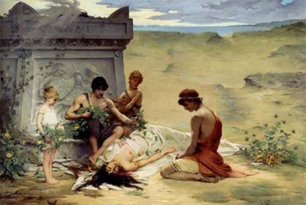
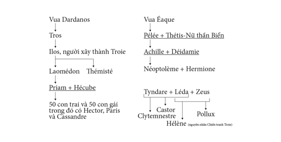

Hạ được thành Troie, quân Hy Lạp cướp bóc được rất nhiều của cải và bắt được rất nhiều tù binh, nhất là những nữ tù binh trẻ đẹp. Họ chỉ còn lo mỗi việc chất hết mọi thứ đã cướp bóc được xuống thuyền và nhổ neo. Tuy nhiên không phải mọi việc diễn ra đều thuận lợi êm đẹp như lòng mong muốn của người Hy Lạp. Cũng như khi xưa lúc ra đi, thần Zeus và các vị thần Olympe và hơn nữa Số mệnh chẳng dành cho họ toàn là niềm vui và sự may mắn.
Việc đầu tiên xảy ra đối với quân Hy Lạp sau khi hạ được thành Troie là vong hồn Achille hiện lên đòi nàng Polyxène. Polyxène là người thiếu nữ đẹp nhất trong số những con gái của lão vương Priam. Người xưa kể rằng chính Polyxène đã gây ra cái chết của Achille. Không rõ Achille gặp Polyxène ở đâu và vào dịp nào, chỉ rõ sau khi gặp người thiếu nữ đó, người anh hùng kiệt xuất của Hy Lạp bỗng thấy nhớ nhung, bứt rứt. Có người kể, Achille gặp Polyxène trong dịp nàng cùng với lão vương Priam và lão bà Hécube đến lều của Achille xin chuộc xác Hector. Nếu như chuyện này là đúng thì ắt nó phải là lần đi xin chuộc xác không thành của lão vương Priam. Vì quá yêu thương, nhớ nhung Polyxène nên Achille tìm cách bày tỏ tình cảm của mình. Chàng hẹn gặp nàng ở đền thờ thần Apollon. Paris biết chuyện này, mai phục, và như đã kể, với sự giúp đỡ của thần Apollon, bắn một phát tên kết thúc cuộc đời người anh hùng con của lão vương Pélée. Có người còn kể, cuộc hò hẹn đó là để làm lễ cưới trong đền thờ Apollon. Lại có người kể, trong cuộc hò hẹn đó, để chinh phục được tình yêu của Polyxène, Achille đã hứa sẵn sàng rời bỏ hàng ngũ quân Hy Lạp chạy sang hàng ngũ quân Troie, hoặc trở về quê hương Hy Lạp từ bỏ cuộc chiến đấu.
Thành Troie bị hạ, Polyxène bị bắt làm tù binh. Quân Hy Lạp lúc này đã chuyển nàng sang bờ phía Tây (châu Âu) của biển Hellespont. Chính lúc đó, vong hồn của Achille hiện lên đòi phải hiến tế nàng. Nàng Cassandre cũng bị bắt và giải đi cùng với em, tha thiết van xin quân Hy Lạp đừng giết em gái mình. Cả chủ tướng tối cao Agamemnon cũng không muốn đem người con gái trẻ đẹp như thế ra làm lễ hiến tế. Nhưng danh tướng Ulysse đòi hỏi mọi người phải tuân thủ sự đòi hỏi của vong hồn Achille. Riêng Polyxène, nàng không hề cầu xin một sự gia ân khoan hồng. Nàng xem ra sẵn sàng đón nhận cái chết. Người ta đoán có lẽ nàng chỉ nghĩ đến thân phận phải làm nô lệ mua vui cho các tướng lĩnh Hy Lạp, một thân phận nhục nhã, ê chề thì thà rằng chết đi còn hơn. Polyxène thản nhiên đi đến trước bàn thờ Achille quỳ xuống phanh áo ngực. Néoptolème xúc động, cầm kiếm đâm mạnh vào cổ Polyxène. Máu chảy tràn ra, ghê rợn, khủng khiếp.

nàng Polyxène
Đến chuyện trở về quê hương cũng lại xảy ra lắm điều rắc rối. Nữ thần Athéna không rõ vì chuyện gì, bất bình, gây ra mối bất hòa giữa hai anh em Atrides. Tổng Chỉ huy Agamemnon muốn quân Hy Lạp ở lại trên đất Troie làm một lễ hiến tế trọng thể để cầu xin nữ thần nguôi giận, và đoàn thuyền Hy Lạp chỉ khi nào đón nhận được điềm báo tốt lành mới nhổ neo hồi hương. Nhưng tướng Ménélas chống lại ý định đó. Ông muốn cho quân sĩ lên đường ngay, ra đi sớm ngày nào hay ngày ấy, giờ ấy. Hai người tranh cãi với nhau suốt từ sáng đến chiều. Chẳng ai chịu nghe ai và chẳng đi đến một kết luận rõ ràng như thế nào cả. Thế là hai anh em Atrides ra lệnh triệu tập Đại hội Binh sĩ, họp ngay, mà lúc đó chiều đã tàn, nắng đã tắt. Tuân theo lệnh hai vị chủ tướng, các tướng lĩnh và quân sĩ kéo đến quảng trường. Thật ra họ chẳng muốn họp, vì họ vừa mới ăn xong, miệng còn sặc hơi men và bước đi còn chếnh choáng. Đại hội cũng chẳng đem lại kết quả gì. Nói năng cãi vã với nhau một hồi lâu rồi cuối cùng đi đến một tình hình phân liệt. Quân Hy Lạp chia thành hai phái. Phái theo Ménélas, sáng sớm hôm sau ra đi ngay. Phái theo Agamemnon ở lại để làm lễ hiến tế. Tướng Ulysse, lão vương Nestor rồi tướng Philoctète, Diomède gia nhập vào phái Ménélas. Họ ra đi đầu tiên dưới sự cầm đầu của Ulysse. Nhưng thần Zeus lại giáng tai họa xuống họ. Một cuộc bất hòa xảy ra khi đoàn thuyền tới đảo Ténédos, khiến Ulysse cùng một số anh em tách ra quay trở về Troie, nói là để thuyết phục Agamemnon. Số còn lại đi tới đảo Lesbos thì Ménélas đi sau anh em, đuổi kịp và nhập bọn.
Tới đảo Lesbos, các vị anh hùng Hy Lạp dừng lại một ngày nghỉ ngơi rồi cho thuyền đi thẳng về đảo Eubée, và như vậy là đã về tới quê hương Hy Lạp. Đoàn thuyền dừng lại ở đảo Eubée làm lễ hiến tế tạ ơn thần Poséidon rồi ra đi tiếp. Bốn hôm sau thuyền của Diomède về đến Argos, thuyền của lão vương Nestor về đến Pylos. Các dũng tướng Idoménée, Philoctète và Néoptolème cũng về tới quê hương bình yên vô sự. Chỉ có hành trình trở về của Ménélas là gặp nhiều trở ngại. Từ đảo Eubée thuyền của Ménélas đi theo ven biển Attique xuống phía nam. Khi ấy thuyền của lão vương Nestor cùng đi bên thuyền của Ménélas. Tới mũi Sounion thần Apollon bắt gặp. Thần bèn giương cung bắn chết chiến sĩ lái thuyền danh tiếng của Ménélas là Phrontis con của Onétor. Ménélas đành phải cho thuyền ghé vào bờ để làm lễ an táng cho người thủy thủ tài năng ấy. Xong công việc, thuyền của Ménélas đi xuôi xuống phía nam vòng qua mũi Malée. Nhưng vừa tới đây thì thần Zeus dồn mây mù cho nổi lên một trận cuồng phong. Mây đen phủ kín bầu trời. Bão nổi lên. Mưa giáng xuống. Sóng cuồn cuộn dâng cao như những trái núi rồi đổ xuống. Đoàn thuyền của Ménélas không sao chống đỡ nổi. Một số thuyền trôi giạt vào đảo Crète va vào các mỏm đá, vỡ tan tành. Một số người vật lộn với biển khơi đến kiệt sức và may mắn lắm mới sống sót được một số ít. Còn lại có năm thuyền, trong đó có thuyền của Ménélas lênh đênh phiêu bạt trên biển cả không biết bao ngày, sau cùng trôi giạt vào bờ biển xứ Ai Cập, và từ đó bắt đầu một cuộc hành trình phiêu lưu suốt bảy năm ròng, từ Ai Cập sang đảo Chypre, rồi sang xứ Phénicie, Arabie, Sidon, Libye. Đi đến nơi nào Ménélas cũng thu thập được nhiều của cải quý giá. Ông đặc biệt thích thú khi thấy ở những đất nước xa lạ có những đàn súc vật rất kỳ lạ: mỗi năm đẻ ba lứa và bê, cừu, bò vừa mới đẻ ra đã có sừng ngay. Ở Ai Cập cũng như ở các nơi khác, đi đến đâu Ménélas và Hélène cũng được tiếp đãi nồng hậu, được trao cho những tặng phẩm quý giá, trong số những tặng phẩm quý giá ta phải kể đến thứ thuốc tiên mà Hoàng hậu Polydamna, vợ của vua Thon ở Ai Cập tặng riêng cho Hélène. Chỉ cần bỏ một viên thuốc tiên này vào nước và uống đi là bao nhiêu nỗi đau khổ, u uất, phiền não, sầu muộn trong người lập tức tiêu tan. Trái tim dường như rắn lại không còn biết xúc động trước nỗi khổ đau nữa, thậm chí trông thấy những người thân thích đang ngã xuống trước mũi lao đồng của quân thù cũng không hề xót xa, rơi một giọt nước mắt. Trải qua nhiều năm tháng, cuối cùng Ménélas từ giã đất Ai Cập trở về quê hương. Chàng ghé lại đảo Pharos vì không được các vị thần cho nổi gió nên thuyền của chàng phải nằm lại ở hòn đảo này mất hai chục ngày. Trong khi đó thì lương thực cạn hết. Đảo hoang không một bóng người nên không thể tìm ra được một thứ gì để có thể ăn được. Tình hình quẫn bách tưởng chừng chỉ còn cách nằm chờ chết. May sao tiên nữ Idothée con của vị thần Biển-Protée biết chuyện. Động lòng thương cảm, nàng đến gặp Ménélas bày cách cho Ménélas đến hỏi cha mình cách ứng xử trong trường hợp khó khăn như thế này. Sáng hôm sau khi nàng Rạng đông-Éos vừa xòe những ngón tay hồng trên biển khơi còn mờ đục sương mù, Ménélas cùng ba người bạn đồng hành tới nơi Idothée dặn. Nàng trao cho bốn người bốn bộ da con hải cẩu, bảo mặc vào người rồi nằm phơi mình trên bãi cát để rình cha nàng cùng với đàn hải cẩu từ dưới biển bơi lên nghỉ. Idothée quả là một thiếu nữ tế nhị và chu đáo. Biết mùi da hải cầu hôi thối, tanh tưởi đến lộn mửa, nàng trao cho mỗi người một thứ dầu thơm thần thánh để bôi vào mũi. Nhờ đó bốn người có thể nằm yên trên bãi cát rình đón thời cơ.
Bốn người nằm chờ, chờ mãi trên bãi cát cho đến tận trưa thì thấy một đàn hải cẩu bơi lên nằm phơi mình trên bãi cát gần chỗ họ. Tất cả đều hồi hộp theo dõi. Một lát sau thần Biển-Protée mới từ dưới nước đi lên. Sau khi đi một lượt điểm lại đàn hải cầu của mình, ông già nằm xuống nghỉ ngay bên cạnh Ménélas. Lập tức Ménélas rồi tiếp các bạn xông đến, chồm lên ôm chặt lấy cụ. Bằng pháp thuật của mình, Protée biến hóa ra thiên hình vạn trạng: sư tử, hổ, báo, rắn, gấu, chim, chuột, chó... Nhưng Ménélas và các bạn không chịu rời bỏ cụ. Cuối cùng cụ già đành phải hiện lại nguyên hình và hỏi rõ ý đồ của Ménélas. Tất cả chỉ chờ có lúc này, Ménélas bèn bày tỏ nguyện vọng. Chàng cầu xin vị thần Biển có tài tiên tri nói cho biết rõ con đường trở về quê hương, chỉ dẫn cho cách đối xử với các vị thần để cầu xin được thuận buồm xuôi gió. Protée cho biết đoàn thuyền phải quay trở về Ai Cập làm lễ hiến tế thần linh rồi hãy lên đường trở về Sparte. Thần còn tiên báo cho Ménélas biết số phận của Hélène và những biến cố sẽ xảy ra trên đường về.
Tuân theo lời chỉ dẫn của Protée, đoàn thuyền của Ménélas vì thế về đến quê hương nhanh chóng và bình yên. Hai vợ chồng sống với nhau những năm cuối đời êm đẹp và hạnh phúc dường như cả hai đều quên hết cái kỷ niệm chẳng vui, chẳng đẹp gì lúc tuổi trẻ xưa kia. Sau khi chết, hai vợ chồng được các vị thần đưa tới một hòn đảo xa tít tắp mù khơi ở tận nơi cùng trời cuối đất, nơi mà chỉ dành riêng cho cuộc sống vĩnh hằng của những người anh hùng cao quý. Đó là thế giới cực lạc, toàn thiện, toàn mỹ và người xưa gọi là thế giới Élysées, cõi Élysées (les champs Élysées).
Nhân đây chúng ta dừng lại một chút để nói về thế giới Élysées. Các nhà nghiên cứu cho chúng ta biết nguồn gốc của biểu tượng tôn giáo thần thoại này có từ thời xa xưa, trước khi hình thành cái gọi là thần thoại Hy Lạp. Trong quan niệm chất phác, nguyên thủy, Élysées là thế giới hạnh phúc của những người đã quá cố, những người hiền lành, tốt bụng, chính trực sau khi đã kết thúc cuộc đời ở cái thế giới nhọc nhằn gian khổ này (Cái thế giới này cũng có hạnh phúc nhưng chưa toàn thiện, toàn mỹ). Trong quá trình phát triển của lịch sử xã hội, khái niệm Élysées đần dần chuyển biến. Khi thì nó được miêu tả là một thung lũng xinh đẹp bên bờ đại dương bao quanh trái đất ở tận miền cực tây, nơi cuộc sống tràn ngập niềm vui, con người không hề biết đến nỗi lo âu và sự thiếu thốn, khí hậu quanh năm ấm áp. Những người trần đoản mệnh không thể nhìn thấy, biết được, tìm được thế giới này, chỉ có những ai được thần Zeus ban cho sự bất tử mới được sống ở đây. Đó là những con người được thần Zeus và các vị thần sùng ái. Đích thân thần Zeus và người con trai Rhadamanthe của thần cai quản cuộc sống ở cái thung lũng tuyệt diệu này. Khi thì Élysées là những hòn đảo hạnh phúc do thần Cronos cai quản, tại đây thần Zeus và các thần Titan cũng như các thần khổng lồ khác đã hòa giải với nhau và cùng chung sống hòa mục. Đây cũng là thế giới dành cho các vị anh hùng. Như vậy, lúc đầu thế giới Élysées không dính líu với những quan niệm đạo đức về tội lỗi, chuộc tội, thưởng phạt... Ngay thế giới âm phủ do thần Hadès và Perséphone cai quản trong biểu tượng thần thoại Hy Lạp lúc đầu chỉ là vương quốc của những bóng đen u ám đã quên hết mọi việc mọi chuyện của cuộc đời. Các vong hồn phải uống một ngụm nước của con sông Léthé để quên hết mọi việc, mọi chuyện của thế giới dương gian. Như vậy có nghĩa là cái quá khứ tội lỗi của vong hồn đã bị xóa sạch, và làm sao người ta có thể xét xử, luận tội, xử tội, bắt chuộc tội bằng những hình phạt này khác khi những vong hồn không còn ký ức, không còn kỷ niệm, không có một chút ý thức về cuộc đời của họ trước kia ở thế giới dương gian? Cuộc đời của những vong hồn ở thế giới âm phủ là một cuộc đời mới hoàn toàn.
Sau này, Élysées chia ra làm hai khu vực: một là hòn đảo hạnh phúc, hai là một khu vực trong âm phủ dành riêng cho linh hồn người có đạo đức, có cống hiến lớn lao. Ảnh hưởng của những nghi lễ diễn xuất-tôn giáo thầm kín (mystère) Éleusis và Orphisme cũng như của học thuyết Platon220 và môn phái Pythagore221 đã làm cho thế giới Élysées trở thành một cõi vĩnh hằng, cao cả mà chỉ những linh hồn nào đã trải qua sự phán xét của thần Hadès mới có thể vươn tới được. Tóm lại thì trong thời cổ đại, khái niệm về thế giới Élysées là một thế giới hạnh phúc, cao cả ở một nơi xa tít tắp mù khơi trên trái đất hoặc ở dưới đất, giữa lòng địa ngục. Như vậy, điều dễ nhận thấy là huyền thoại về thế giới Élysées có họ hàng thân thuộc với huyền thoại về thời đại Hoàng kim, một huyền thoại mà khá nhiều dân tộc trên thế giới đều có. Tùy hoàn cảnh địa lý của từng dân tộc, cái thế giới vĩnh hằng tuyệt diệu đó khi thì ở bên kia đại dương ngút ngàn sóng nước, khi thì ở bên kia những triền núi cao vời vợi, trùng trùng, điệp điệp, khi thì ở tận đầu cùng của một sa mạc khổng lồ vô cùng vô tận nơi người trần đoản mệnh đang sống với cái thế giới của những vui, buồn, yêu, ghét... của những lo âu, đau khổ và lạc thú hạnh phúc không thể nào tiếp cận được.
Huyền thoại về thế giới Élysées đã là một trong những chất liệu quan trọng để Thiên Chúa giáo sử dụng làm tiền đề, làm cơ sở xây dựng khái niệm Thiên đường của mình. Thiên đường trong Thiên Chúa giáo lúc đầu ở trên mặt đất sau chuyển lên bầu trời. Ngày nay thế giới Élysées, cõi Élysées mang một ý nghĩa ám dụ, tượng trưng nơi an nghỉ cao cả vĩnh hằng, là vương quốc của cái Chân, cái Thiện, cái Mỹ, hoặc với ý nghĩa đơn giản là nơi an nghỉ vĩnh viễn, cõi chết, thế giới bên kia.
Trở lại chuyện hành trình trở về của các tướng lĩnh Hy Lạp. Số phận đoàn thuyền thuộc phái Agamemnon cũng chẳng tốt đẹp hơn số phận đoàn thuyền của phái Ménélas. Từ Troie trở về đến đảo Eubée, đoàn thuyền của vị Tổng Chỉ huy quân đội Hy Lạp không gặp một khó khăn gì đáng kể. Nhưng khi tới dãy núi đá Gyrée thì một cơn bão ập đến. Cơn bão do nữ thần Athéna gây ra để trừng phạt quân Hy Lạp, trong đó có Ajax Bé, con của Oïlée là kẻ đã phạm tội kiêu căng, ngạo mạn, phạm thượng. Bão vùng vẫy, gầm thét nhấn chìm nhiều con thuyền của quân Hy Lạp xuống đáy biển làm mồi cho cá. Thuyền của Ajax vỡ tan. Thần Poséidon thấy vậy thương tình sai một con sông ném Ajax lên ngọn núi đá Gyrée. Thế là Ajax thoát chết, một cái chết tưởng chừng như không gì cứu vãn được. Nhưng đến thế mà anh chàng này vẫn không chừa được thói kiêu căng, ngạo mạn. Đứng trên ngọn núi anh ta hét lên cho mấy người bạn sống sót biết: “Ajax sống rồi, thấy chưa? Nữ thần Athéna cho dù có nổi cơn thịnh nộ cũng chẳng làm gì được ta. Chẳng thần linh nào cứu giúp, ta vẫn cứ chiến thắng được bão tố và vẫn cứ sống cho các vị ấy xem”, Ajax hét lên trong niềm sung sướng đắc chí như thế. Cả nữ thần Athéna và Poséidon đều nghe thấy, nghe thấy rõ chẳng thiếu một lời. Nữ thần Athéna không thể kìm hãm được nỗi căm tức, nàng bay ngay tới thần Poséidon, xin thần trừng phạt cái tên phạm thượng, nghịch đạo “coi trời bằng vung” ấy. Thần Poséidon lập tức vung cây đinh ba giáng một đòn sấm sét vào ngay ngọn núi đá mà Ajax đang đứng. Ngọn núi đá vỡ làm đôi, một nửa chìm xuống biển kéo theo Ajax.
Như trên đã kể, Palamède bị xử tử, chịu một cái chết oan uổng bi thảm vì Ulysse dựng chuyện vu cáo tư thông với quân Troie. Chuyện vu cáo đó bay tới tai Nauplios, người cha xấu số của Palamède. Ông quyết định phải rửa nhục, trả thù. Ông, cũng lại bằng thủ đoạn dối trá mà Ulysse đã dùng để ám hại con ông, đi chỗ này chỗ khác để tung tin thất thiệt, bịa đặt về những người anh hùng đang chiến đấu ở Troie: nào vị tướng này nghe đâu tháng trước trúng tên vào ngực chết rồi, nào vị tướng kia bị trúng lao thủng ruột xem ra khó bề qua khỏi... hoặc tướng nọ xa vợ lâu ngày đã lấy vợ khác, lấy con gái người anh hùng này, tướng kia sắp cưới công chúa con của lão vương nọ... Những tin tức thất thiệt đó đã làm xói mòn lòng tin của những người vợ xa chồng, chờ chồng trong những năm dài đằng đẵng. Nhiều người tin rằng chồng mình chẳng thể có ngày trở về, hoặc dẫu có còn sống thì cũng chẳng thể giữ được trọn mối tình chung thủy với mình. Kết quả là Égialée vợ của dũng tướng Diomède bắt “bồ” với chàng trai Cométès. Méda, vợ của người anh hùng Idoménée kết bạn khá thân thiết, thân tình, thân... “thể” với Leucos. Còn Clytemnestre, vợ của chủ tướng Agamemnon, mời hẳn một chàng trai tên là Égisthe vào ở đàng hoàng trong cung điện để trông nom nhà cửa cho nó đỡ trống trải...
Nhưng như thế Nauplios chưa hả lòng, chưa coi là đã trả thù được cho đứa con yêu quý của mình. Ông còn rắp tâm giáng một đòn nặng nề hơn nữa, và đòn ấy diễn ra vào lúc quân Hy Lạp chiến thắng trở về, thời cơ thích hợp nhất với ông. Vốn là một thủy thủ lành nghề nên ông hiểu biết rõ tâm lý những người lái con thuyền đi trong đêm đen trên biển khơi mênh mông chẳng biết đâu là bờ là bến. Ông đã từng thuộc hết những chỗ nông sâu, những quãng hiểm nghèo, những đoạn đầy đá ngầm trên mặt biển Égée, nhất là ven biển Hy Lạp. Được tin đoàn thuyền Hy Lạp trở về, ông rình đón suốt ngày đêm ở mũi Capharée, phía nam đảo Eubée. Cứ khi bóng đêm trùm xuống là ông cho đốt những đống lửa to ở những quãng có mũi nhọn, đá ngầm. Các thủy thủ của những con thuyền Hy Lạp nhìn thấy ánh lửa chập chờn xa xa cứ đinh ninh rằng nơi đó là bến tốt và vui mừng. Họ cho thuyền đi hướng thẳng vào nơi có ánh sáng. Nhưng than ôi! Thuyền của họ hoặc va vào đá ngầm, đâm vào núi đá, vỡ tan tành.
Lại nói về Agamemnon, con thuyền của chàng cũng gặp nạn. Bão nổi lên, sóng giập gió vùi đưa con thuyền của chàng ngửa nghiêng, nghiêng ngửa trôi tuột mãi xuống đến mũi Malée, rồi lại trôi tiếp phía nam tưởng chừng như xuôi thẳng đảo Crète hay bạt về phía châu Phi. May thay, các vị thần nguôi cơn thịnh nộ. Trời đổi gió. Con thuyền của Agamemnon ngược lên, đi áp vào vùng bờ biển Péloponnèse rồi ghé được vào bờ. Sung sướng biết bao sau bao nhiêu năm trời xa cách quê hương, giờ đây Agamemnon lại được nhìn thấy những cảnh vật thân yêu, gắn bó với mình từ thời thơ ấu. Nước mắt chàng trào ra. Chàng quỳ xuống kính cẩn cúi mình hôn mảnh đất quê hương. Nhưng số phận của chàng không phải là trở về đô thành Mycènes đầy vàng bạc để hưởng hạnh phúc. Một cái chết khủng khiếp do người vợ không chung thủy của chàng chăng ra để đón tiếp chàng.
Nhưng trong số những người anh hùng Hy Lạp sau chiến thắng Troie trở về thì không ai phải trải qua nhiều gian nan, vất vả, không ai phải đương đầu với những thử thách hiểm nghèo như người anh hùng Ulysse. Hành trình trở về của người anh hùng đa mưu túc kế này kéo dài suốt mười năm trời khi thì ở biển Đông, khi thì phiêu bạt sang biển Tây, nhiều lúc cái chết tưởng như cầm chắc trong tay. Ấy thế mà Ulysse vượt qua được hết để cuối cùng trở về với hòn đảo Ithaque của mình, gặp lại người vợ thủy chung của mình đã kiên định chờ đợi suốt hai mươi năm trời. Chuyện về hành trình phiêu bạt của Ulysse suốt mười năm trời trên mặt biển, nay lạc bước vào xứ sở này mai trôi giạt đến một hòn đảo khác, theo người xưa nói, phải kể hết ngày này qua ngày khác thì mới hết được.
Nói thêm về Diomède. Việc nàng Égialée, vợ của Diomède không giữ được trọn lòng chung thủy như trên đã kể là do Nauplios trả thù, tung tin thất thiệt, phá hại lòng tin của những người vợ có chồng tham gia cuộc viễn chinh Troie. Nhưng người ta lại còn kể, vụ ngoại tình này là do nữ thần Aphrodite trả thù. Xưa kia Diomède trong lúc giao tranh đã ngạo mạn bất kính đối với thần linh, đánh bị thương nữ thần Aphrodite. Nữ thần bèn khơi lên trong trái tim nàng Égialée những dục vọng thèm khát ái ân không sao kìm hãm được. Nữ thần lại đưa đường chỉ lối cho những chàng trai đến thăm hỏi, săn sóc Égialée, và tình hình đã xảy ra như thế, đến thế thì... khỏi phải nói, có mà trời giữ!
Diomède trở về Argos. Biết chuyện, chàng buồn bã âu sầu, chẳng buồn ăn, chẳng buồn nói, và bữa kia chàng lặng lẽ bỏ nhà, từ bỏ vương quốc của mình ra đi. Chàng đi sang miền nam nước Ý, đến vương quốc Apulie222, xin nhà vua xứ sở này cho trú ngụ. Cảm phục sự nghiệp anh hùng của chàng cũng như xót xa ái ngại cho tình cảnh của chàng, vua Daunus đã gả con gái cho chàng. Chàng đã lập nghiệp tại đây và có công lao xây dựng nên nhiều đô thành ở miền nam nước Ý. Chẳng rõ xảy ra chuyện gì bất hòa, vua Daunus đã giết chàng. Có chuyện lại kể, không phải Diomède bị vua Daunus giết mà các vị thần đã đưa chàng đến cõi vĩnh hằng, mai táng chàng ở một hòn đảo mà cả quần đảo đó được mang tên chàng. Chàng được nhân dân suy tôn thờ cúng như một vị thần. Còn những chiến hữu của chàng, các vị thần đã biến thành một loài chim.
***
Đọc truyền thuyết về những người Argonautes và truyền thuyết về cuộc Chiến tranh Troie so sánh với một số truyền thuyết khác nói về chiến công của những người anh hùng thần thoại, chúng ta có thể ghi nhận được một vài nét khác biệt sau đây.
1 - Chiến công của những người anh hùng Argonautes và chiến công của những người anh hùng trong cuộc Chiến tranh Troie không giống với chiến công của những người anh hùng Persée, Héraclès, Thésée... Chúng ta không gặp lại những anh hùng giết quái vật cứu lương dân, diệt đạo tặc trừ khử tai họa cho đời sống, chinh phục thiên nhiên, cải tạo thiên nhiên, khám phá thiên nhiên như Persée, Thésée, Héraclès. Chúng ta không thể tìm thấy một chiến công nào có ý nghĩa nổi bật, sâu sắc, vĩ đại như chiến công của Héraclès. Đó là những chiến công cực kỳ táo bạo và phong phú, trong đó có những chiến công chưa từng có một người anh hùng nào lập được, giành được. (Nắn sông, dời non xẻ núi tạo ra eo biển, dám thay thần Atlas chống đội bầu trời, xuống âm phủ bắt chó ngao Cerbère). Chiến công của những người anh hùng Argonautes là đoạt Bộ lông Cừu vàng để có một báu vật thiêng liêng bảo đảm cho ngôi báu được vững bền. Chiến công của những người anh hùng trong cuộc Chiến tranh Troie là giết được kẻ thù, tước đoạt được vũ khí và những chiến lợi phẩm.
2 - Trong quan hệ đối với thần thánh, con người vốn rất kính sợ và tôn trọng. Tuy nhiên, nhiều lúc con người vẫn phạm vào cái lối ngạo mạn, kiêu căng, dám thách thức, đương đầu “bướng ra mặt” đối với thần thánh, mặc dù đã nhiều lần bị trừng phạt. Song con người vẫn chứng nào tật ấy, dường như cái thói ngạo mạn, kiêu căng, “bướng ra mặt” với thần thánh là bản chất không sửa chữa được của con người.
Chúng ta đã từng biết đến những người anh hùng táo tợn đến mức dám lừa cả thần Hadès, bắt sống thần Chết-Thanatos (Sisyphe), dám thử tài toàn trí toàn năng của thần thánh (Tantale), dám xuống âm phủ bắt nàng Perséphone, vợ của thần Hadès (Thésée, Pirithoos). Nhưng đến cuộc Chiến tranh Troie, chúng ta thấy con người còn táo tợn hơn, dám đánh cả thần thánh, đánh thật sự chứ không kiêng nể gì, đánh cho thần thánh bị thương phải bỏ chạy, và không phải chỉ có một lần.
Số mệnh và thần thánh vẫn tiền định, điều khiển trong một mức độ nào đó cuộc sống của con người. Nhưng con người lại cũng trong một mức độ nào đó tự điều khiển, tự quyết định hành vi, hành động của mình mà không phải trong một mức độ nào đó con người không có quyền lựa chọn. Achille đã lựa chọn con đường tham gia cuộc Chiến tranh Troie mặc dù biết rằng nếu tham gia, cuộc đời sẽ kết thúc ngắn ngủi. Achille tham chiến cùng với quân Hy Lạp không phải như một công cụ thực hiện điều tiền định của Số mệnh và thần thánh mà vì những động cơ tư tưởng của bản thân Achille, một con người trần tục đoản mệnh. Khi không tham chiến với quân Hy Lạp, Achille có ý nghĩ, có quan niệm của riêng mình. Khi trở lại tham chiến với quân Hy Lạp, Achille cũng có ý nghĩ, có quan niệm của riêng mình. Số mệnh và điều tiền định là một chuyện và con người hành động độc lập trong một chừng mực nào đó lại là một chuyện khác. Trong cái quy định tất yếu của Số mệnh và những điều tiền định, con người đã hành động với những quan niệm, suy nghĩ cụ thể của mình, và đó chính là một phẩm chất mới của chủ nghĩa anh hùng thần thoại. Con người đã cố gắng giành cho mình được một quyền độc lập, tự do tương đối nào đó trong cái tất yếu của Số mệnh.
Thần Zeus là người quyết định trong việc trả lại thi hài Hector cho lão vương Priam. Nhưng Achille không phải là một công cụ vô tri vô giác để thực hiện ý định của thần. Những lời cầu xin của Priam đã khiến chàng xúc động, đã thức tỉnh tính người, lòng nhân ái trong con người của chàng, khiến chàng nghĩ tới người cha già thân yêu của mình và xót thương cho số phận của cụ. Hành động ưu ái của chàng đối với lão vương Priam biểu hiện ra trước chúng ta không phải như là kết quả của việc tuân theo mệnh lệnh của thần Zeus mà là kết quả của sự xúc động, sự thức tỉnh tính người trong trái tim Achille. Về nhân vật Hector, chúng ta cũng thấy những nét tương tự. Có thể nói, trước Achille chúng ta chỉ được chứng kiến những anh hùng thần thoại hành động, đến Achille chúng ta được chứng kiến những anh hùng thần thoại suy nghĩ, xúc cảm và hành động. Thế giới nội tâm của người anh hùng thần thoại đã được biểu hiện một cách khá phong phú. Bước tiến bộ này chỉ có thể giải thích bằng sự tiến bộ của lịch sử xã hội loài người. Xã hội Hy Lạp đã đứng trước ngưỡng cửa của thời đại văn minh, và những nhân vật anh hùng thần thoại cũng được văn minh hóa theo với đà tiến triển của xã hội.
3 - Những nhân vật anh hùng thần thoại thường kết thúc với số phận của mình theo mấy cách dưới đây:
a) Do chiến công vĩ đại của mình có ý nghĩa sâu sắc, tác dụng to lớn đến đời sống mà thần Zeus và các vị thần của thế giới Olympe hài lòng cảm phục, thừa nhận công lao cống hiến bằng quyết định khen thưởng: “đề bạt” vào hàng ngũ những vị thần bất tử (Dionysos, Héraclès). Hiện tượng này chắc chắn không phải chỉ riêng có ở Hy Lạp.
b) Do hành động bất kính, ngạo mạn, phạm thượng đối với thần linh mà bị thần linh trừng phạt, bắt chịu khổ hình dưới âm phủ hoặc kết liễu cuộc đời (Bellérophon, Tantale, Sisyphe, Thésée).
Nhưng đến những người anh hùng trong truyền thuyết về những người Argonautes và truyền thuyết về cuộc Chiến tranh Troie thì chúng ta thấy không một nhân vật anh hùng thần thoại nào được gia nhập vào hàng ngũ các vị thần của thế giới Olympe bất tử.
Achille sau khi chết và được quân Hy Lạp đã làm lễ an táng mới được bà mẹ là nữ thần Biển-Thétis đưa đến một hòn đảo. Diomède cũng tương tự như thế. Hơn nữa, cái chết hoặc nỗi bất hạnh của nhân vật anh hùng là do thần linh trừng phạt vì tội ngạo mạn, bất kính. Apollon trừng phạt Achille, Aphrodite trừng phạt Diomède. Athéna, Poséidon trừng phạt Ajax Bé. Athéna trừng phạt Ajax Lớn. Mặc dù vậy, những cái chết đó vẫn mang một ý nghĩa anh hùng hoặc cao thượng. Nó hoàn toàn không phải là cái chết về mặt tinh thần, đạo đức của nhân vật. Diomède để lại sự nghiệp lớn lao ở miền trung nước Ý. Ajax Lớn để lại khí phách anh hùng của một con người biết trọng danh dự, có ý thức rất cao về danh dự của người chiến sĩ.
Thế nhưng với người anh hùng Jason trong truyền thuyết về những người Argonautes thì hoàn toàn khác. Thần thánh không trừng phạt Jason. Jason không chết ở chiến trường như Achille, không hối hận để rồi tự sát như Ajax Lớn. Jason chết vì một tai nạn ngẫu nhiên, một cái chết không để lại một niềm xót thương nhớ tiếc, một cái chết vô nghĩa, và xét đến cùng, không cần phải suy nghĩ sâu rộng gì cho lắm, chúng ta đều có thể rút ra kết luận Jason chết vì những dục vọng xấu xa của mình, lòng khát khao quyền lực, tiền tài, địa vị. Tóm lại cái gọi là “hạnh phúc” cho bản thân đã thúc đẩy Jason đến hành động phản bội trắng trợn lại người vợ chung thủy, xúc phạm, chà đạp lên quyền sống, nhân phẩm và danh dự của nàng. Vì thế Jason bị người vợ trừng phạt.
Nếu nói đây là truyện thần thoại thì đúng là... thần thoại! Nào tấm khăn choàng, nào chiếc vương miện của Médée có phép lạ, đội vào đầu, choàng vào người là rút da xé thịt, là bốc cháy không sao gỡ ra được. Nhưng nếu nói đấy không phải là truyện thần thoại mà là một chuyện thật, có lẽ rất thật, rất hiện thực, không có gì xa lạ đối với đời sống loài người chúng ta, là của loài người chúng ta, thì chắc chắn không một ai có lý lẽ gì để phản bác. Ở đây, ở câu chuyện này chính con người, mối quan hệ giữa con người với con người quyết định những biến cố trong cuộc sống của họ. Họ là kẻ gieo hạt và họ là kẻ gặt hái. Chẳng có vị thần nào xúi giục Jason phản bội lại lý tưởng anh hùng cao đẹp của mình. Chẳng có vị thần nào khơi lên trong trái tim Jason những dục vọng xấu xa cả. Chúng ta ghi nhận một bước chuyển biến, một bước tiến của thần thoại anh hùng. Bước chuyển biến này có ý nghĩa gì? Trước hết nó đặt ra vấn đề trách nhiệm của con người đối với hành động của mình trong một thế giới thần thoại mà các vị thần thường can thiệp thô bạo, áp đặt vào đời sống con người những lời phán truyền, sấm ngôn này khác. Như vậy thì đâu là trách nhiệm của thần thánh, đâu là trách nhiệm của con người? Vấn đề này không phải chỉ ở câu chuyện này mới đặt ra mà sau này sẽ còn có những chuyện khác tiếp tục đặt ra.
Thần thánh không trừng phạt Jason vì Jason không làm điều gì xấc xược, phạm thượng. Nhưng tại sao thần thánh lại không nhòm ngó, đoái hoài, quan tâm chút gì đến người anh hùng mà xưa kia trong cuộc hành trình sang xứ sở Colchide luôn luôn được sự giúp đỡ của thần thánh? Phải chăng thần thánh sợ dây vào cái con người đã bị biến chất, tha hóa ấy thì tổn hại cho danh dự và uy tín của mình? Ở đây xuất hiện một cách tự nhiên, khách quan, ý nghĩa đạo đức, bài học về đạo đức của truyền thuyết. Sự bỏ rơi của thần thánh đối với Jason chỉ có nghĩa Jason không còn xứng đáng là người anh hùng, Jason xứng đáng với đòn trừng phạt của người vợ. Từ người anh hùng cao thượng đến kẻ hèn hạ, phản phúc, đê tiện, khoảng cách đó không xa. Có giữ được khoảng cách đó hay không là tùy thuộc ở con người. Con người quyết định chứ không phải thần thánh quyết định.
Nhưng cái bước tiến về nhận thức: mối quan hệ giữa con người với con người quyết định những biến cố trong cuộc sống của họ nói lên, phản ánh một sự thật gì? Đó là cuộc sống xã hội đã tiến bộ hơn, phức tạp hơn. Con người trong quá trình tiến bộ của mình cũng phức tạp hơn. Sự phức tạp đó chính là do chủ nghĩa cá nhân và tấn bi kịch của nó. Chúng ta sẽ thấy vấn đề này khá rõ ở cái xã hội của các tướng lĩnh Hy Lạp trong cuộc Chiến tranh Troie.
4 - Trong gia tài thần thoại Hy Lạp không một truyền thuyết nào phong phú, phức tạp và nhiều ý nghĩa như truyền thuyết về cuộc Chiến tranh Troie. Chúng ta không thể phân tích hết và đầy đủ mọi vấn đề mà chỉ có thể phân tích những vấn đề nổi bật nhất.
a) Trước hết chúng ta thấy vai trò và vị trí con người trong mối quan hệ với thần thánh ngày càng được khẳng định. Con người được trao cho nhiệm vụ giám khảo, tối hậu quyết định trong cuộc thi sắc đẹp giữa ba vị nữ thần. Trong chiến tranh, sức mạnh của con người sánh ngang thần thánh và... như trên đã nói.
b) Trong mối quan hệ giữa con người với con người, bên cạnh những phẩm chất cao quý tốt đẹp như lòng trung thành với lý tưởng, ý thức trọng danh dự, tình chiến hữu, sự trung thực... gắn bó mọi người với nhau, chúng ta thấy bộc lộ ra khá nhiều những tính xấu như: sự lừa dối, tính tham lam, thói ghen tị thù hằn, sự trả thù nhỏ nhen, tính tàn bạo... Mối bất hòa giữa chủ tướng Agamemnon với Achille là một bằng chứng. Bị ức hiếp, Achille những toan rút kiếm ra lấy máu rửa hận. Nếu không có nữ thần Athéna can thiệp thì chắc chắn đã xảy ra một tấn bi kịch đẫm máu. Trong sự thống nhất của khối cộng đồng những đạo quân liên minh của các đô thành trên đất nước Hy Lạp đã xuất hiện sự chia rẽ, sự không thật đồng tâm nhất trí, gắn bó keo sơn. Quyền lực đã có một người bạn đường là sự ức hiếp. Vì lẽ đó nên ông già tiên tri Calchas không đám nói thẳng, nói sự thật, sợ đụng chạm đến Agamemnon thì sẽ bị Agamemnon trả thù. Cụ đòi Achille phải thề hứa bảo vệ tính mạng cho cụ. Và chính Agamemnon đã dùng quyền lực của mình để vơ vét, thu vén làm giàu cho riêng mình. Chiến lợi phẩm quân sĩ thu được đem về nộp thì Agamemnon chia ra thì ít mà giữ lại phần mình thì nhiều... Tóm lại, đã xuất hiện một quan hệ bất bình đẳng và ức hiếp. Sự trả thù của Achille đối với quân Hy Lạp lại càng tồi tệ, nhẫn tâm hơn nữa, quân Hy Lạp đã bị tổn thương nặng nề khi Achille từ bỏ cuộc chiến đấu.
Trong thần thoại và truyền thuyết Hy Lạp đầy rẫy những cuộc trả thù. Thần thánh trả thù con người vì tội bất kính bội ước. Con người trả thù con người vì tội lừa đảo, bội ước, phản phúc, vì những món nợ máu truyền kiếp, vì tội vu cáo. Những chuyện trả thù như thế, có những chuyện khá khủng khiếp như tội ác và sự thù hằn giữa anh em Atrée và Thyeste, truyện hai chị em Procné và Philomèle biến thành chim, song nhìn chung đều đơn giản, và có những chuyện có vai trò chi phối sắp đặt của số mệnh và thần thánh. Nhưng có lẽ không có một câu chuyện trả thù nào lại đau xót, lại khủng khiếp, lại ghê sợ, lại để lại trong trí óc và trái tim người đọc một ấn tượng khó phai mờ và nhiều suy nghĩ như chuyện Ulysse trả thù Palamède. Palamède đã phạm tội gì để đến nỗi bị Ulysse trả thù? Bội ước ư? Không! Vu cáo ư? Không! Sát hại một người nào có quan hệ huyết thống với Ulysse ư? Không! Palamède chỉ có “tội” là đã phát hiện ra sự lừa dối của Ulysse, cái trò bịp giả điên của Ulysse, Palamède chỉ có “tội” là đã tài giỏi hơn Ulysse. Những câu chuyện trả thù khác dù có dã man, khủng khiếp như giết con nấu cháo, làm chả, giết cháu làm cỗ để mời bố đẻ của những đứa trẻ bất hạnh ấy ăn... mặc dù ghê rợn, nhưng cũng là một sự thực hiện công lý ác giả ác báo (như truyện Tấm Cám của chúng ta). Nhưng chuyện Ulysse trả thù Palamède thì hoàn toàn không phải là một sự thực hiện công lý. Các vị thần của thế giới Olympe từ thần Zeus đã biết bao lần giáng đòn trừng phạt người này kẻ khác, chàng nọ ả kia, nhưng cộng tất cả những cuộc trả thù ấy lại cũng không thể nào sánh nổi với vụ Ulysse trả thù. Trí tuệ của thần thánh so với trí tuệ của Ulysse quả thật là thua kém xa, xa lắm. Thần thánh không thể nào xảo quyệt bằng Ulysse, không thể nào thiết kế được một cái “hồ sơ giả” với những bằng chứng có vẻ thật để vu cáo Palamède vào tội tư thông với quân thù, làm gián điệp cho vua Priam. Ghê sợ, bỉ ổi và khủng khiếp đến thế là cùng!
Đó, bước tiến bộ của con người trong việc khẳng định vai trò và vị trí của mình trong cuộc sống, bên những mặt tích cực đã bộc lộ ra những mặt tiêu cực như thế. Cái ngày mà con người biết dùng đầu óc và mưu trí của mình để chống chọi với thú dữ, để chinh phục thiên nhiên thì cũng là cái ngày mà con người biết dùng đầu óc và mưu trí của mình để ám hại đồng loại, thanh trừ, tiêu diệt đồng loại. Ulysse trả thù Palamède, nghĩa là Ulysse đã ám hại người bạn chiến đấu của mình để thỏa mãn tham vọng quyền lực, địa vị, danh tiếng. Palamède chết là người trung thực và có tài năng bị chết, bị thất bại; thói xảo quyệt, kèn cựa, ghen tị nhỏ nhen có đất sống, thắng lợi. Ôi, Chân lý! Ngươi lại chết sớm hơn cả ta; thật xót xa và cay đắng! Màn đầu tấn bi kịch của chủ nghĩa cá nhân khi loài bước vào thời đại văn minh của chế độ tư hữu là như thế đấy!
5 - Xã hội Hy Lạp trong truyền thuyết về cuộc Chiến tranh Troie là xã hội công xã thị tộc trên bước đường cùng tan rã. Đặc điểm nổi bật nhất của giai đoạn này là, như F. Engels nói: “Chiến tranh ngày xưa giữa bộ lạc với bộ lạc từ thời kỳ này đã biến chất thành cuộc cướp bóc có hệ thống trên đất liền và trên mặt biển để chiếm đoạt gia súc, nô lệ, của cải, tức là đã biến thành một cách kiếm lợi thông thường, tóm lại của cải được người ta tán dương và coi trọng như là một của báu tối cao, và những thể lệ cũ của thị tộc bị người ta bôi nhọ đi để biện hộ cho sự cướp đoạt của cải bằng bạo lực”223. Những cuộc chiến tranh cho phép bóc lột có hệ thống trên đất liền và trên mặt biển như F. Engels chỉ ra đã ngày càng làm tăng thêm quyền hành của thủ lĩnh quân sự, và từ chỗ trong tay có nhiều quyền hành thủ lĩnh quân sự đã từ “người đầy tớ ban đầu biến dần thành người chủ”224 đồng thời kéo theo “nạn ăn cắp của chung làm của riêng”225.
Thói sùng bái của cải dẫn đến tham vọng về quyền lực, bởi vì của cải và quyền lực là đôi bạn đường chung sống với nhau trong mối quan hệ nhân quả, và chính cũng từ thói sùng bái của cải và tham vọng về quyền lực mà đẻ ra biết bao những thói hư tật xấu tệ hại khác nữa như: tính tham lam, dối trá, lừa đảo, đầu óc xảo quyệt, phản phúc, thói ghen tị, kèn cựa, sự tàn nhẫn, sự trả thù, lối trù giập, kiểu sống trắng trợn, vụ lợi, keo kiệt... Tóm lại, tất cả những thói xấu mà ngày nay chúng ta gọi vắn tắt là chủ nghĩa cá nhân hoặc chủ nghĩa cá nhân thú vật.
Đó là cơ sở xã hội-lịch sử của truyền thuyết về cuộc Chiến tranh Troie. Chúng ta có thể thấy truyền thuyết về những người Argonautes hoàn toàn gần gũi với cơ sở xã hội-lịch sử này.
Bảng gia hệ vương triều Troie

220 Platon (427-347 TCN), nhà triết học duy tâm nổi tiếng của thời cổ đại, người đã đề xướng ra học thuyết về ý niệm tuyệt đối, bất tử là bản chất của thế giới. Theo ông, linh hồn là bất tử, con người trong cuộc sống muốn vươn tới hạnh phúc, chân, thiện, mỹ cần phải suy ngẫm, hồi tưởng lại bản chất của ý niệm đích thực.
221 Pythagore (580-500 TCN), nhà toán học và triết học cổ đại. Ông cho rằng bản chất của thế giới là con số, là cái số lượng trừu tượng. Những môn đệ của ông phát triển cách giải thích đó đã thần bí hóa con số, nêu lên học thuyết về sự tạm trú của linh hồn bất tử trong cơ thể và sự nhập hóa của linh hồn bất tử từ cơ thể này sang cơ thể khác.
222 Apulie (địa danh cổ) ngày nay là miền Fouille ở Nam Ý nằm giữa dãy núi Apennin và biển Adriatique, gồm có những thành phố Foggia, Bari, Tarente, Brindisi, Lecce.
223 F. Engels, Nguồn gốc của gia đình, của chế độ tư hữu, và của nhà nước. NXB Sự Thật, Hà Nội, 1961, tr. 160.
224 F. Engels, Chống Dühring. NXB Sự Thật, Hà Nội, 1976. tr. 297.
225 F. Engels, Nguồn gốc của gia đình, của chế độ tư hữu, và của nhà nước. NXB Sự Thật, Hà Nội, 1961, tr.145.